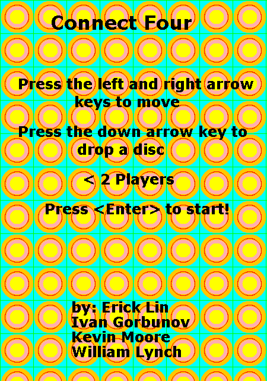

Portfolio
Street Racing Portable
A Mode 3 Game Boy Advance game programmed in C.
Click here to download.
Pattern Recognition Task
I programmed an emotionally engaging graphical pattern detection task for our research study on individual variability in pattern recognition under ambiguous feedback. This study was conducted under the Laboratory for Computational Neurodiagnostics at Stony Brook University.
A description of the study, including more details related to the cyber security task, can be downloaded here.

Yvain and the Fountain
An interactive narrative artifact (PC game) for a freshman English course that focuses on space with regard to society and culture.
Click here to download.
Connect Four
My AP Computer Science final project. Demonstrates the use of Java's Swing and AWT for a simple graphical two-player game.


Interactive Meiosis Animation
Educational demonstration created for my high school biology final project. Programmed in the Game Maker Language and IDE. Resources were drawn using computer tools.
Click here to download.